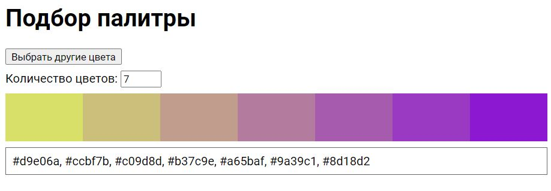
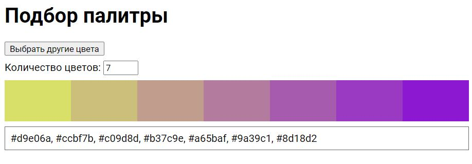

ВСР Тема 3. Проектирование сценария для подбора цветового оформления веб-документа
Файл с кодом
Ссылка на сценарий

Сценарий реализован с использованием библиотеки chroma.js
Шкала показывается от двух случайно выбранных цветов, которые генерируются с помощью метода
Для создания шкалы используется метод
Ссылка на сценарий

Сценарий реализован с использованием библиотеки chroma.js
Шкала показывается от двух случайно выбранных цветов, которые генерируются с помощью метода
chroma.random().Для создания шкалы используется метод
chroma.scale(colors)